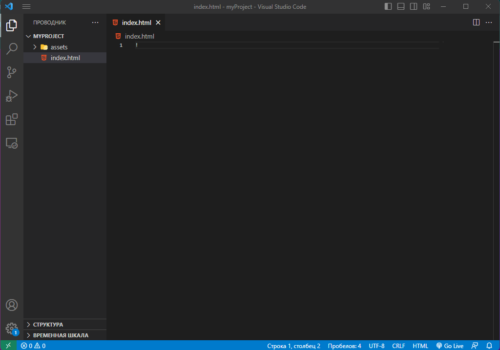
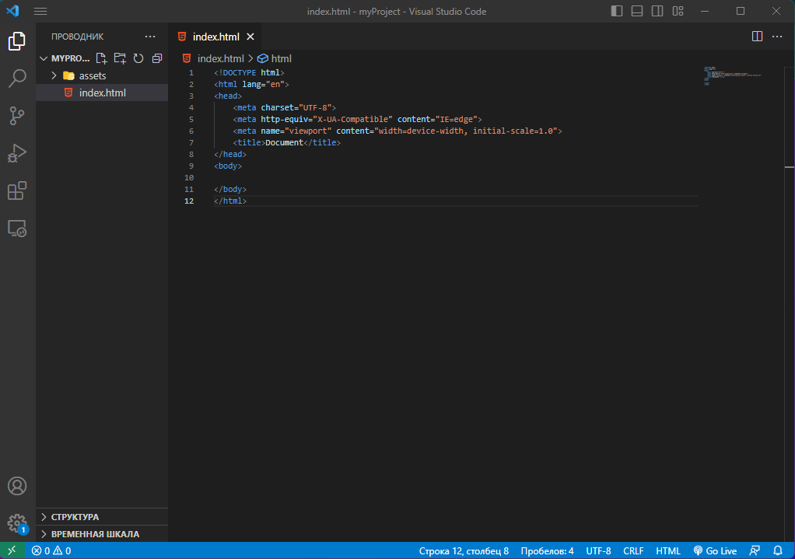
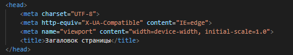
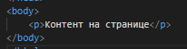
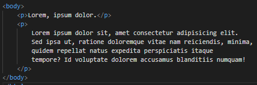
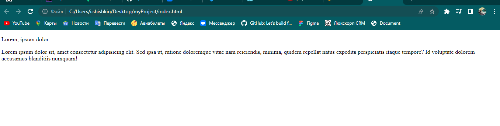

3) НАЧНЕМ ЖЕ ПИСАТЬ КОД!
Большенство редакторов поддерживают функцию быстрой вставки шаблонов emet, поэтому что бы написать изначальную структуру странички нам достаточно написать ! и нажать таб.


Теперь нам надо разобрать что нам тут понаписали.
Тег html отвечает за все страницу в целом счетай что это и есть страница.
В нем пишутся весь контент а так же настройки страницы.
Далее идет тег head в нем мы можем задавать параметры страницы, название вкладки в браузере, кодировку, подключать стили, скрипты и так же еще много всего.

После тега head идет тег body он нужен для отображениея контента на странице.

Самое главное правило верстальщика заключается в том что весь контент которые вы хотите показать пользователю вам нужно вставлять в тег body.
Так же дальше я буду говорить "в тег" поскольку так принято у верстальщиков, но это не значит что именно между скобочками вы должны что то вставлять, это означает что вы должны вставить между тегами.
Теперь что бы ввести любой текст на странице ван потребуется написать тег p (параграф) и в нем уже написать какой либо текст.

Как вы видите на скриншоте показано два варианта написания это в одну строчку и многострочную структуру.
Обычно у верстальщиков принято правильно писать код странице, а то есть писать с отступами фиксировать вложеность и многострочность.
Как видно на примере главное что бы контент был внутри тега, то есть между ним, это очень легкое правило и надеюсь вы его запомните.
Теперь вам надо будет сохранить изменения в файле это можно сделать с помощью горячих клавишь Shift+S , затем нам нужно будет нажать правой кнопкой мыши на наш файл в папке и выбрать пункт открыть как и выбрать браузер.

Вот мы и написали с вами вашу первую страничку вашего сайта жду вас на следущих этапах ведь чем дальше тем интересней!